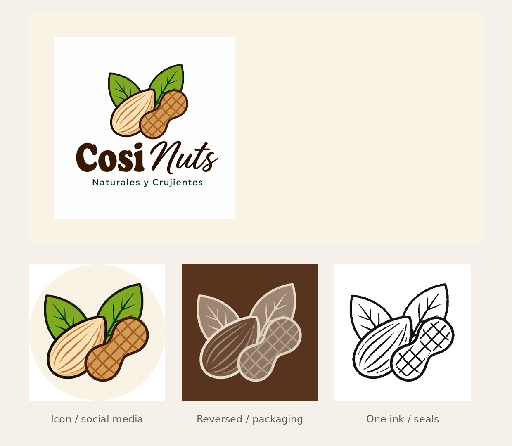
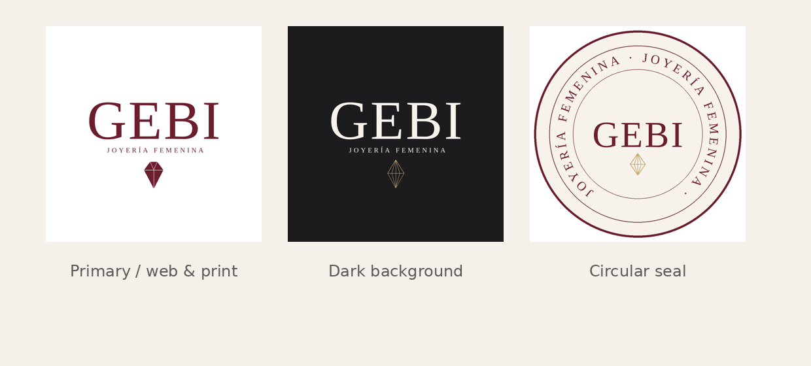
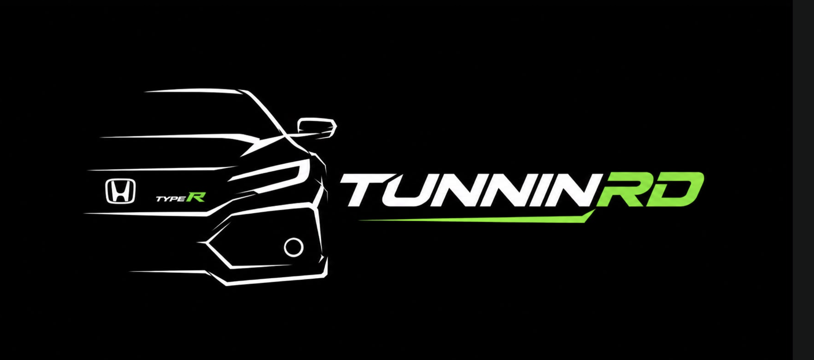
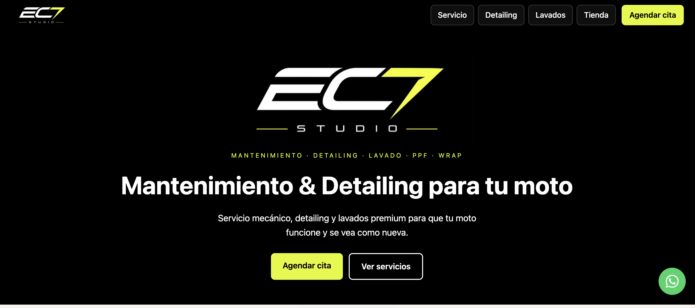
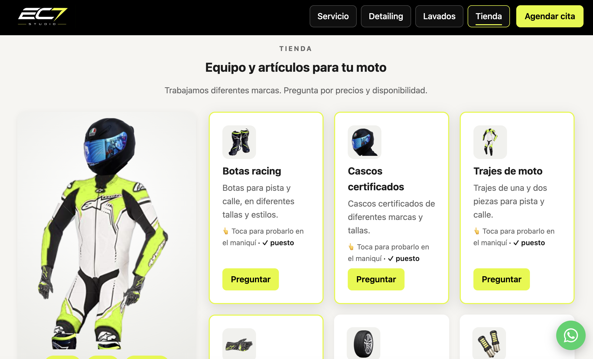
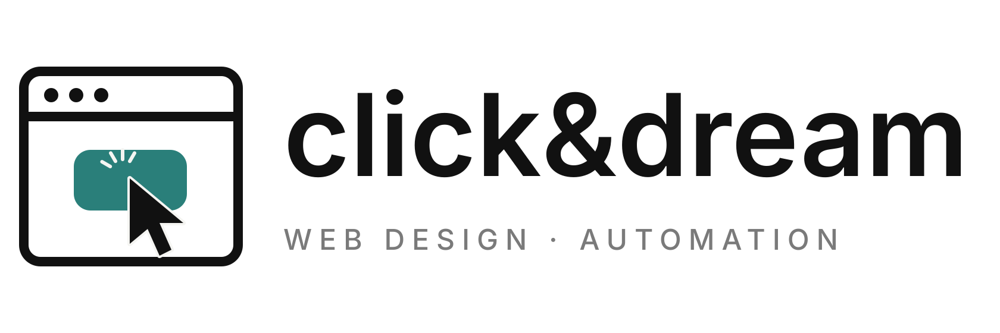
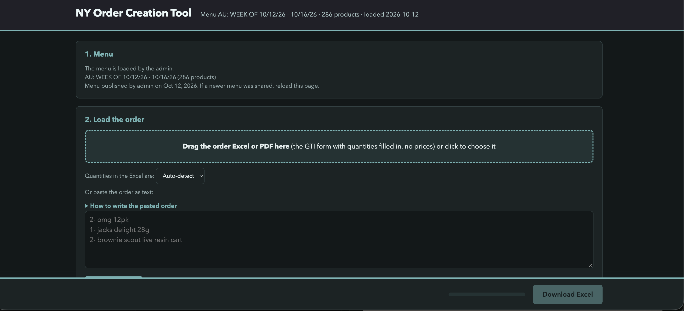

<meta name="claude:viewport-fit-sides" content="cover">
<title>Melody Choc Portfolio</title>
<link rel="stylesheet" href="https://fonts.googleapis.com/css2?family=Bricolage+Grotesque:opsz,wght@12..96,500;12..96,700&family=Manrope:wght@400;500;600&display=swap">
<style>
/* Layout: single column, editorial stack. Projects as stacked sections, sales ops as a compact list. */
:root {
  --bg: #f5f4ef;
  --surface: #ffffff;
  --ink: #1d2420;
  --muted: #5d6762;
  --accent: #2A7F7A;
  --line: #d9dcd3;
  color-scheme: light;
}
@media (prefers-color-scheme: dark) {
  :root:not([data-theme="light"]) {
    --bg: #141a17;
    --surface: #1c2521;
    --ink: #ecefe9;
    --muted: #a3ada6;
    --accent: #6FC3BC;
    --line: #2d3832;
    color-scheme: dark;
  }
}
:root[data-theme="dark"] {
  --bg: #141a17;
  --surface: #1c2521;
  --ink: #ecefe9;
  --muted: #a3ada6;
  --accent: #6FC3BC;
  --line: #2d3832;
  color-scheme: dark;
}
body {
  margin: 0;
  background: var(--bg);
  color: var(--ink);
  font-family: "Manrope", system-ui, sans-serif;
  font-size: 16px;
  line-height: 1.6;
  padding-inline: max(16px, env(safe-area-inset-left, 0px)) max(16px, env(safe-area-inset-right, 0px));
  padding-block: 24px 56px;
}
.wrap { max-width: 880px; margin: 0 auto; display: grid; gap: 56px; }
h1, h2, h3 {
  font-family: "Bricolage Grotesque", system-ui, sans-serif;
  text-wrap: balance;
  margin: 0;
  line-height: 1.15;
}
h1 { font-size: clamp(2.4rem, 7vw, 4rem); font-weight: 700; letter-spacing: -0.02em; }
h2 { font-size: 1.6rem; font-weight: 700; margin-bottom: 18px; }
h3 { font-size: 1.15rem; font-weight: 700; }
.label {
  font-size: 0.78rem;
  text-transform: uppercase;
  letter-spacing: 0.08em;
  color: var(--accent);
  font-weight: 600;
}
.intro p { max-width: 62ch; color: var(--muted); margin: 16px 0 0; }
.tags { display: flex; flex-wrap: wrap; gap: 8px; margin-top: 18px; }
.tag {
  font-size: 0.9rem;
  color: var(--muted);
}
.tag + .tag::before {
  content: "·";
  margin-right: 8px;
  color: var(--line);
}
.project {
  background: var(--surface);
  border: 1px solid var(--line);
  border-radius: 14px;
  padding: 28px;
  display: grid;
  gap: 14px;
  min-width: 0;
}
.project p { margin: 0; color: var(--muted); max-width: 66ch; }
.project ul { margin: 0; padding-left: 20px; color: var(--muted); display: grid; gap: 6px; }
.project a { color: var(--accent); font-weight: 600; }
.project a:focus-visible, .tag:focus-visible { outline: 2px solid var(--accent); outline-offset: 2px; }
.results { display: grid; gap: 18px; }
.roles { display: grid; gap: 18px; }
.role { border-top: 1px solid var(--line); padding-top: 18px; }
.role p { margin: 6px 0 0; color: var(--muted); }
.role ul { margin: 10px 0 0; padding-left: 20px; color: var(--muted); display: grid; gap: 6px; }
.skills { display: grid; grid-template-columns: repeat(auto-fit, minmax(200px, 1fr)); gap: 18px; }
.skills div { border-top: 1px solid var(--line); padding-top: 14px; }
.skills p { margin: 8px 0 0; color: var(--muted); font-size: 0.95rem; }
.contact p { margin: 0; color: var(--muted); max-width: 60ch; }
.swatches { display: flex; flex-wrap: wrap; gap: 14px 18px; margin: 4px 0 0; }
.swatches span { display: flex; align-items: center; gap: 8px; font-size: 0.85rem; color: var(--muted); }
.swatches i { width: 22px; height: 22px; border-radius: 6px; border: 1px solid var(--line); display: inline-block; }
@media (prefers-reduced-motion: no-preference) {
  .project { transition: border-color 0.2s ease; }
  .project:hover { border-color: var(--accent); }
}
</style>

<main class="wrap">
  <header class="intro">
    <span class="label">Portfolio</span>
    <h1>Melody Choc</h1>
    <p>Sales operations and brand work. I keep orders, invoices and customer data accurate, and I design logos and websites that help small businesses sell.</p>
    <div class="tags">
      <span class="tag">Sales operations</span>
      <span class="tag">CRM &amp; pipeline</span>
      <span class="tag">Logo design</span>
      <span class="tag">Website design</span>
      <span class="tag">Automation</span>
    </div>
  </header>

  <section aria-labelledby="work">
    <span class="label">Selected work</span>
    <h2 id="work">Brand &amp; web projects</h2>
    <div class="results">
      <article class="project">
        <span class="label">Brand, logo &amp; website</span>
        
        <h3>Cosi Nuts</h3>
        
        <p>A Guatemalan nut and snack brand that started with one customer goal and grew into a product line. I built the brand's logo and its variations, and a website for the catalog and orders.</p>
        <ul>
          <li>Official logo: almond and peanut with two green leaves, a bold "Cosi" with a script "Nuts", and the tagline "Naturales y Crujientes".</li>
          <li>Brand system with an icon for social media, a negative version for packaging, and a one-ink version for seals.</li>
          <li>Seasonal Halloween variant of the logo for October.</li>
          <li>Catalog website with about 20 products in six categories, priced in quetzales, and an add-to-cart flow.</li>
          <li>Orders are assembled on the site and sent to the brand's WhatsApp, where they are confirmed.</li>
          <li>Product catalog and orders connected to a database, built the same way as the EC7 Studio site.</li>
          <li>Online card payment is in development and is not yet live.</li>
        </ul>
        <div class="swatches" aria-label="Cosi Nuts brand colors">
          <span><i style="background:#381808"></i>Dark brown #381808</span>
          <span><i style="background:#88A828"></i>Leaf green #88A828</span>
          <span><i style="background:#D89858"></i>Peanut tan #D89858</span>
          <span><i style="background:#F8E8B8"></i>Cream #F8E8B8</span>
        </div>
      </article>

      <article class="project">
        <span class="label">Logo design</span>
        <h3>GEBI</h3>
        
        <p>A logo system for a women's jewelry brand (Joyería femenina). I designed three versions for every use, from web and print to packaging and seals, and wrote the client guide with the color palette and usage rules.</p>
        <ul>
          <li>Primary logo in burgundy for the website, social media and stationery.</li>
          <li>Dark-background version with a champagne gold diamond for black packaging and video.</li>
          <li>Circular seal for labels, boxes, bags and certificates.</li>
        </ul>
        <div class="swatches" aria-label="GEBI brand colors">
          <span><i style="background:#6B1E2E"></i>Burgundy #6B1E2E</span>
          <span><i style="background:#C9A96E"></i>Champagne gold #C9A96E</span>
          <span><i style="background:#F7F3EC"></i>Ivory #F7F3EC</span>
          <span><i style="background:#1C1C1E"></i>Graphite #1C1C1E</span>
        </div>
      </article>

      <article class="project">
        <span class="label">Logo improvement</span>
        <h3>TUNNINRD</h3>
        
        <p>Logo refinement for a car decoration business (auto decoraciones).</p>
        <div class="swatches" aria-label="TUNNINRD brand colors">
          <span><i style="background:#181818"></i>Black #181818</span>
          <span><i style="background:#98E848"></i>Neon green #98E848</span>
          <span><i style="background:#F8F8F8"></i>White #F8F8F8</span>
        </div>
      </article>

      <article class="project">
        <span class="label">Web development &amp; design</span>
        <h3>EC7 Studio</h3>
        
        
        <p>A website and booking system for a motorcycle maintenance, detailing and wash studio. I designed and built the full site in Python with Flask 3.1.3 and PostgreSQL, and added JavaScript for the interactive product preview and animations.</p>
        <ul>
          <li>Flask handles routing, page rendering and an admin panel for the business.</li>
          <li>Appointment booking on PostgreSQL: booked time slots are blocked for other clients and released when a booking is cancelled, by the client or the business.</li>
          <li>Bookings are saved as leads before the final WhatsApp confirmation.</li>
          <li>Service menu with tiered maintenance packages, detailing and wash packages with transparent starting prices.</li>
          <li>Product store with an interactive mannequin preview and WhatsApp inquiry buttons.</li>
          <li>Location section with an embedded map, business hours, and directions and social contact links.</li>
        </ul>
        <div class="swatches" aria-label="EC7 Studio brand colors">
          <span><i style="background:#0A0A0A"></i>Black #0A0A0A</span>
          <span><i style="background:#E8F858"></i>Neon yellow #E8F858</span>
          <span><i style="background:#383838"></i>Graphite #383838</span>
          <span><i style="background:#F8F8F8"></i>White #F8F8F8</span>
        </div>
      </article>

      <article class="project">
        <span class="label">Brand identity</span>
        <h3>click&amp;dream</h3>
        
        <p>Logo and brand identity for a web design and automation studio. The mark shows a browser window with a clicking cursor, which connects the two services: websites and workflows.</p>
        <ul>
          <li>Logo with a browser-window icon, a teal accent, and the tagline "Web Design · Automation".</li>
          <li>Vector files (SVG and PNG) for web, social media and avatars.</li>
          <li>Instagram profile and bio in progress.</li>
        </ul>
        <div class="swatches" aria-label="click&amp;dream brand colors">
          <span><i style="background:#111111"></i>Ink #111111</span>
          <span><i style="background:#2A7F7A"></i>Teal #2A7F7A</span>
          <span><i style="background:#F5F5F2"></i>Off-white #F5F5F2</span>
          <span><i style="background:#7A7A7A"></i>Gray #7A7A7A</span>
        </div>
      </article>
    </div>
  </section>

  <section aria-labelledby="ops">
    <span class="label">Experience</span>
    <h2 id="ops">Sales operations</h2>
    <div class="roles">
      <div class="role">
        <h3>Sales Operations, Headquarters</h3>
        <p>Order forms and invoice reconciliation for a multi-store client.</p>
        <ul>
          <li>Compare per-store order breakouts against draft invoices to find quantity discrepancies before invoices are finalized.</li>
          <li>Built an order entry tool that replaced manual order entry and sends an automatic daily report.</li>
          <li>Keep per-store Excel workbooks organized by order and status.</li>
          <li>Built an internal order creation tool that reads customer order forms (Excel or PDF), matches items to the product menu, and exports a per-store Excel file.</li>
        </ul>
        
      </div>
      <div class="role">
        <h3>Sales Operations, FuturHealth</h3>
        <p>Forms, Excel review and process automation.</p>
        <ul>
          <li>Reviewed spreadsheets and forms to find and correct data errors.</li>
          <li>Built automations to reduce manual steps in the team's workflow.</li>
        </ul>
      </div>
      <div class="role">
        <h3>Freelance Web Designer &amp; Marketing</h3>
        <p>Since 2019</p>
        <p>Brand, logo and website projects for small businesses in Guatemala and the Dominican Republic.</p>
        <ul>
          <li>Designed logos and brand systems, including variations for social media, packaging and seals.</li>
          <li>Designed and built websites, including catalog sites, booking systems and admin panels.</li>
          <li>Digital marketing: brand strategy and social media presence, with a diploma in digital marketing from Universidad de Occidente.</li>
        </ul>
      </div>
    </div>
  </section>

  <section aria-labelledby="skills">
    <span class="label">Tools &amp; training</span>
    <h2 id="skills">Skills</h2>
    <div class="skills">
      <div>
        <h3>Operations</h3>
        <p>Excel, Google Workspace, order and invoice reconciliation, process documentation.</p>
      </div>
      <div>
        <h3>CRM &amp; tasks</h3>
        <p>HubSpot, Asana, monday.com, Notion, Zapier.</p>
      </div>
      <div>
        <h3>Programming</h3>
        <p>Python (Flask), JavaScript, Java, PostgreSQL. Web apps with booking systems and admin panels.</p>
      </div>
      <div>
        <h3>Databases</h3>
        <p>Database design and creation for websites, including product catalogs, orders, appointments and leads. PostgreSQL.</p>
      </div>
      <div>
        <h3>Design</h3>
        <p>Logo design, brand variations, website layout. Canva and Adobe Photoshop.</p>
      </div>
      <div>
        <h3>AI tools</h3>
        <p>ChatGPT and Claude for drafting, analysis and workflow automation.</p>
      </div>
      <div>
        <h3>Education</h3>
        <p>Diploma in digital marketing, Universidad de Occidente (Guatemala).</p>
      </div>
    </div>
  </section>
</main>
